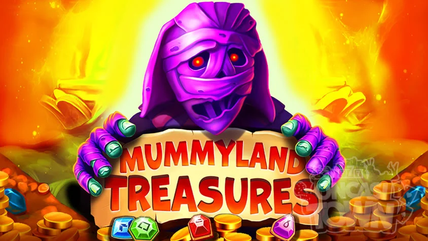
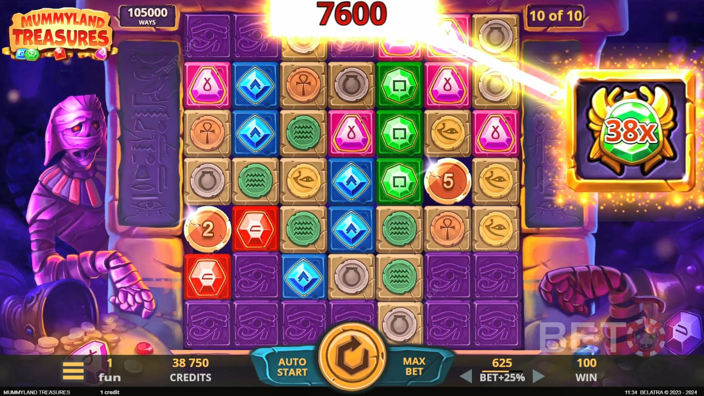

MummylandTreasures
Начать игру
Египетская гробница с живой мумией
Египетская гробница с живой мумией Mummyland Treasures погружает в атмосферу древнего Египта — пирамиды, иероглифы и мумия, которая неожиданно появляется прямо во время игры и взвинчивает множитель. Каждый спин ощущается как вылазка в проклятую гробницу.

Сетка, которая растёт на глазах
Слот начинается с 3 активных рядов, но каскадные победы взрывают каменные блоки — поле разворачивается до 7×7 и открывает до 823 543 линий выплат. Чем дольше серия, тем масштабнее становится игровое поле.
ТОП Онлайн Казино


Попробуй демо прямо сейчас
Бесплатная версия — без регистрации и депозита
Mummyland Treasures: особенности слота и подход к игре на деньги
Слоты с тематикой Древнего Египта стабильно удерживают интерес аудитории в индустрии iGaming. Причина проста: сочетание понятной символики, атмосферы приключений и потенциально крупных выигрышей.
В этом контексте Mummyland Treasures занимает свою нишу как продукт, ориентированный на игроков, которые ищут не просто развлечение, а более структурированный игровой процесс.
Важно сразу понимать: такие слоты нельзя рассматривать как инструмент заработка. Это форма развлечения с элементом риска, где ключевую роль играет генератор случайных чисел. Однако грамотный подход к игре позволяет контролировать процесс и избегать типичных ошибок.
Как устроен игровой процесс
В основе Mummyland Treasures слот лежит классическая механика видеослотов: вращение барабанов, формирование комбинаций и начисление выплат.
Но за внешней простотой скрывается ряд нюансов, которые напрямую влияют на итоговый результат.
Первое, на что стоит обратить внимание — волатильность. В данном случае она ближе к средней или выше средней. Это означает, что игрок не получает постоянные мелкие выигрыши. Вместо этого акцент сделан на более редкие, но ощутимые выплаты.
Такой формат требует терпения. Игроку важно быть готовым к тому, что часть сессии может проходить без значительных результатов. Это не недостаток, а особенность математической модели слота.
Роль бонусных функций
Современные слоты редко ограничиваются базовой механикой, и Mummyland Treasures не является исключением. Основной интерес здесь формируется за счет бонусных режимов.
Фриспины — ключевой элемент, который может существенно изменить ход игры.
Именно в них чаще всего реализуется потенциал крупных выигрышей. При этом важно учитывать, что их активация происходит случайным образом, и никакая стратегия не может повлиять на частоту их выпадения.
Дополнительную роль играет Wild-символ. Он помогает формировать комбинации, но его эффективность зависит от конкретной игровой ситуации. В некоторых случаях именно его появление становится решающим фактором.
Игра на деньги: что важно учитывать
Когда речь заходит про Mummyland Treasures в рублях, игроки часто фокусируются исключительно на возможной прибыли. Это распространённая ошибка. Гораздо важнее учитывать структуру расходов и рисков.
- Во-первых, необходимо определить бюджет. Это сумма, потеря которой не окажет влияния на финансовое состояние. Без этого игра быстро превращается в неконтролируемый процесс;
- Во-вторых, важно учитывать длительность сессии. Слоты с подобной волатильностью лучше раскрываются при умеренных ставках и более длинной игре;
- В-третьих, стоит понимать, что даже при игре в формате Mummyland Treasures в рублях результат остается случайным. Никакие «рабочие схемы» или «секретные стратегии» не меняют математику слота.
Почему демо-режим — это полноценный этап подготовки, а не формальность
Перед тем как переходить к ставкам на реальные деньги, важно уделить внимание тестированию слота в бесплатном формате. Многие игроки воспринимают Mummyland Treasures demo как необязательный этап, однако на практике именно он позволяет сформировать базовое понимание игры без финансовых рисков.
Демо-версия — это не просто «пробный запуск». Это полноценная модель игрового процесса, в которой сохраняются все ключевые параметры: волатильность, частота выпадения бонусов, логика формирования комбинаций.
Используя Mummyland Treasures demo, игрок может в спокойной обстановке изучить поведение слота и адаптироваться к его темпу.
Особенно это важно для тех, кто ранее не сталкивался с подобной механикой. Визуально слот может казаться простым, но реальные особенности раскрываются только в процессе игры.
Бесплатный режим позволяет понять, насколько часто происходят выигрыши, как распределяются выплаты и какую роль играют бонусные функции.
Отдельного внимания заслуживает тестирование ставок. В демо-режиме можно без ограничений менять их размер и наблюдать, как это влияет на динамику баланса. Это даёт возможность подобрать комфортный уровень риска еще до перехода к игре на деньги.
В этом контексте Mummyland Treasures демо становится инструментом не только для ознакомления, но и для выработки собственной модели поведения.
Некоторые платформы также предлагают формат Mummyland Treasures демо в рублях, что дополнительно упрощает восприятие.
Игрок сразу видит значения, приближенные к реальным, и может более точно оценить потенциальные расходы и выигрыши. Это особенно полезно для новичков, которым сложно ориентироваться в абстрактных кредитах.
Однако важно понимать границы демо-режима. Несмотря на полное соответствие механике, он не передаёт главного — психологического фактора. При игре на виртуальные средства отсутствует давление, связанное с риском потери собственных денег.
В реальной игре поведение пользователя может меняться: появляются импульсивные решения, желание увеличить ставку или быстрее отыграться.
Поэтому демо-режим стоит рассматривать как тренировочную среду. Он помогает разобраться в технической стороне процесса, но не заменяет полноценный опыт игры на деньги.
Оптимальный подход — использовать Mummyland Treasures demo для изучения и только после этого переходить к реальным ставкам, уже имея понимание механики и собственных ограничений.
Поведение слота на дистанции
Один из ключевых факторов, который отличает опытного игрока от новичка — понимание дистанции. Mummyland Treasures не рассчитан на быстрый результат. Его модель предполагает постепенное развитие игровой сессии.
На коротком отрезке возможны как быстрые выигрыши, так и их полное отсутствие. Но при более длительной игре проявляются закономерности: основной потенциал сосредоточен в бонусных функциях, а базовые вращения чаще выполняют поддерживающую роль.
Это важно учитывать при выборе размера ставки. Слишком агрессивная стратегия может привести к быстрому завершению сессии без возможности дождаться бонусного раунда.
Ошибки, которых стоит избегать
На практике большинство проблем связано не с самим слотом, а с поведением игрока. В случае с Mummyland Treasures можно выделить несколько типичных ошибок.
- Первая — попытка отыграться после серии неудач. Это приводит к увеличению ставок и ускоренному расходу бюджета;
- Вторая — отсутствие стратегии. Даже простое правило фиксированной ставки уже снижает уровень риска;
- Третья — игнорирование волатильности. Игроки ожидают частых выигрышей и разочаровываются, не понимая, что слот изначально построен по другой логике.
Практический подход к игре
Чтобы игра оставалась контролируемой, важно придерживаться базовых принципов. Они не гарантируют выигрыш, но позволяют снизить вероятность потерь.
Оптимальный подход включает:
- Выбор умеренного размера ставки;
- Фиксацию лимитов на сессию;
- Отказ от увеличения ставок после проигрыша.
Такой подход особенно актуален при игре в Mummyland Treasures в рублях, где финансовая дисциплина становится ключевым фактором.
Заключение
Mummyland Treasures — это не просто тематический слот, а продукт с определенной логикой и структурой. Он требует терпения, понимания механики и грамотного подхода к управлению бюджетом.
Игроки, которые воспринимают его как развлечение и учитывают особенности волатильности, получают более комфортный опыт. В то время как попытки «обыграть систему» почти всегда приводят к разочарованию.
В конечном итоге, результат зависит не только от самого слота, но и от того, насколько осознанно пользователь подходит к процессу игры.
Характеристики
| Тематика | Древний Египет |
| RTP | 96.37% |
| Волатильность | Высокая |
| Дата выхода | 17.02.2023 |
| Разработчик | Belatra Games |
| Размер ставки, $ | 0,2-50 |
| Макс. Выигрыш | 25000x |
FAQ
Нет. Слот работает на основе генератора случайных чисел, и результат каждой игры не зависит от предыдущих. Это форма развлечения с риском, а не инструмент стабильного дохода.
Волатильность средняя или выше средней. Это означает, что выигрыши выпадают реже, но могут быть более крупными. Игроку важно быть готовым к периодам без выплат.
Нет. Никакие стратегии не могут изменить математику слота или повлиять на выпадение бонусов. Однако управление банкроллом (бюджетом) помогает контролировать процесс и снижать риски.
Демо-режим позволяет изучить механику слота, частоту бонусов и поведение выплат без финансовых рисков. Это полезный этап подготовки, особенно для новичков.
Оптимально — установить бюджет, играть на умеренных ставках, не пытаться отыгрываться и заранее ограничивать длительность сессии. Такой подход помогает избежать типичных ошибок и сохранить контроль над игрой.